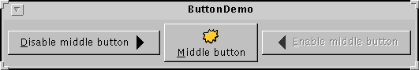
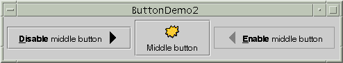
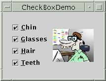
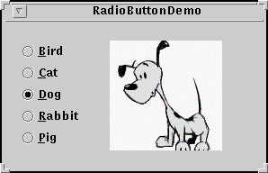

Feedback Form
|
|
Start of Tutorial > Start of Trail > Start of Lesson |
Search
Feedback Form |
To create a button, you can instantiate one of the many classes that descend from theAbstractButtonclass.
The following table shows the Swing-defined
AbstractButtonsubclasses that you might want to use:
Class Summary Where Described JButtonA common button. How to Use the Common Button API and How to Use JButton Features JCheckBoxA check box button. How to Use Check Boxes JRadioButtonOne of a group of radio buttons. How to Use Radio Buttons JMenuItemAn item in a menu. How to Use Menus JCheckBoxMenuItemA menu item that has a checkbox. How to Use Menus and How to Use Check Boxes JRadioButtonMenuItemA menu item that has a radio button. How to Use Menus and How to Use Radio Buttons JToggleButtonImplements toggle functionality inherited by JCheckBoxandJRadioButton. Can be instantiated or subclassed to create two-state buttons.Used to implement the crayon buttons in How to Use Color Choosers, the cm button in How to Use Scroll Panes, and NumberButtonin the BINGO!
 First, this section explains the basic button API that
First, this section explains the basic button API that
Note: If you want to collect a group of buttons into a row or column, then you should check out tool bars.AbstractButtondefines -- and thus all Swing buttons have in common. Next, it describes the small amount of API thatJButtonadds toAbstractButton. After that, this section shows you how to use specialized API to implement check boxes and radio buttons.
Here is a picture of an application that displays three buttons:
Try this:
- Compile and run the application. The source file is
ButtonDemo.javaimages:left.gif,middle.gif, andright.gif.
See Getting Started with Swing if you need help compiling or running this application.- Click the left button.
It disables the middle button (and itself, since it's no longer useful) and enables the right button.- Click the right button.
It enables the middle button and the left button, and disables itself.
As the
ButtonDemoexample shows, a Swing button can display both text and an image. InButtonDemo, each button has its text in a different place, relative to its image. The underlined letter in each button's text shows the mnemonic -- the keyboard alternative -- for each button.When a button is disabled, the look and feel automatically generates the button's disabled appearance. However, you could provide an image to be substituted for the normal image. For example, you could provide gray versions of the images used in the left and right buttons.
How you implement event handling depends on the type of button you use and how you use it. Generally, you implement an action listener
Below is the code from
ButtonDemo.java
//In initialization code: ImageIcon leftButtonIcon = new ImageIcon("images/right.gif"); ImageIcon middleButtonIcon = new ImageIcon("images/middle.gif"); ImageIcon rightButtonIcon = new ImageIcon("images/left.gif"); b1 = new JButton("Disable middle button", leftButtonIcon); b1.setVerticalTextPosition(AbstractButton.CENTER); b1.setHorizontalTextPosition(AbstractButton.LEFT); b1.setMnemonic(KeyEvent.VK_D); b1.setActionCommand("disable"); b2 = new JButton("Middle button", middleButtonIcon); b2.setVerticalTextPosition(AbstractButton.BOTTOM); b2.setHorizontalTextPosition(AbstractButton.CENTER); b2.setMnemonic(KeyEvent.VK_M); b3 = new JButton("Enable middle button", rightButtonIcon); //Use the default text position of CENTER, RIGHT. b3.setMnemonic(KeyEvent.VK_E); b3.setActionCommand("enable"); b3.setEnabled(false); //Listen for actions on buttons 1 and 3. b1.addActionListener(this); b3.addActionListener(this); b1.setToolTipText("Click this button to disable " + "the middle button."); b2.setToolTipText("This middle button does nothing " + "when you click it."); b3.setToolTipText("Click this button to enable the " + "middle button."); ... } public void actionPerformed(java.awt.event.ActionEvent e) { if (e.getActionCommand().equals("disable")) { b2.setEnabled(false); b1.setEnabled(false); b3.setEnabled(true); } else { b2.setEnabled(true); b1.setEnabled(true); b3.setEnabled(false); } }
Ordinary buttons --JButtonobjects -- have just a bit more functionality than theAbstractButtonclass provides. You can make aJButtonbe the default button, and if you're using the right release, you can specify the text and formatting of a button's label using HTML.At most one button in a top-level container can be the default button. The default button typically has a highlighted appearance and acts clicked whenever the top-level container has the keyboard focus and the user presses the Return or Enter key. The exact implementation depends on the look and feel. Here is a picture of a dialog, implemented in
ListDialog.javaYou set the default button by invoking the setDefaultButtonmethod on a top-level container's root pane. Here is the code that sets up the default button for theListDialogexample://In the constructor for a JDialog subclass: getRootPane().setDefaultButton(setButton);Here's an example of specifying HTML for the buttons in
ButtonDemo:Here is a picture of the buttons when the program is run in a platform that supports Swing 1.1.1 Beta 1 or a compatible release:b1 = new JButton("<html><font size=-1><b><u>D</u>isable</b>" + " middle button</font>", leftButtonIcon); ... b2 = new JButton("<html><font size=-1>Middle button</font>", middleButtonIcon); ... b3 = new JButton("<html><font size=-1><b><u>E</u>nable</b>" + " middle button</font>", rightButtonIcon); Note that we had to use a <u> tag to cause the mnemonic character to be underlined in the button. The middle button has no underlined character because we didn't use the <u> tag in it. Note also that when a button is disabled, its HTML text remains dark, instead of becoming gray.
This figure has been reduced to fit on the page.
Click the image to view it at its natural size.
Warning: Don't use HTML in buttons unless you're absolutely sure that the program is running in a release that supports this feature. In releases that support only the Swing 1.1 API, putting HTML in a button results in one ugly-looking button, such as this one:For more information, see Using HTML on a Label.
TheJCheckBoxJCheckBoxMenuItemJCheckBoxandJCheckBoxMenuIteminherit fromAbstractButton, Swing check boxes have all the usual button characteristics, as discussed earlier in this section. For example, you can specify images to be used in check boxes.Check boxes are similar to radio buttons but their selection model is different, by convention. Any number of check boxes in a group -- none, some, or all -- can be selected. A group of radio buttons, on the other hand, can have only one button selected.
Here is a picture of an application that uses four check boxes to customize a cartoon:

Try this:
- Compile and run the application. The source file is
CheckBoxDemo.javaimages/geek. See the examples index for links to all the files required by this example.
See Getting Started with Swing if you need help compiling or running this application.- Click the Chin button or press Alt-c.
The Chin check box becomes unselected, and the chin disappears from the picture. The other check boxes remain selected. This application has one item listener that listens to all the check boxes. Each time the item listener receives an event, the application loads a new picture that reflects the current state of the check boxes.A check box generates one item event and one action event per click. Usually, you listen only for item events, since they let you determine whether the click selected or deselected the check box. Below is the code from
CheckBoxDemo.java//In initialization code: chinButton = new JCheckBox("Chin"); chinButton.setMnemonic(KeyEvent.VK_C); chinButton.setSelected(true); glassesButton = new JCheckBox("Glasses"); glassesButton.setMnemonic(KeyEvent.VK_G); glassesButton.setSelected(true); hairButton = new JCheckBox("Hair"); hairButton.setMnemonic(KeyEvent.VK_H); hairButton.setSelected(true); teethButton = new JCheckBox("Teeth"); teethButton.setMnemonic(KeyEvent.VK_T); teethButton.setSelected(true); // Register a listener for the check boxes. CheckBoxListener myListener = new CheckBoxListener(); chinButton.addItemListener(myListener); glassesButton.addItemListener(myListener); hairButton.addItemListener(myListener); teethButton.addItemListener(myListener); ... class CheckBoxListener implements ItemListener { public void itemStateChanged(ItemEvent e) { ... Object source = e.getItemSelectable(); if (source == chinButton) { //...make a note of it... } else if (source == glassesButton) { //...make a note of it... } else if (source == hairButton) { //...make a note of it... } else if (source == teethButton) { //...make a note of it... } if (e.getStateChange() == ItemEvent.DESELECTED) //...make a note of it... picture.setIcon(/* new icon */); ... } }
Note: In a future release, we expect check boxes to support HTML text. See Using HTML on a Label for information about HTML text support.
Radio buttons are groups of buttons in which, by convention, only one button at a time can be selected. The Swing release supports radio buttons with theJRadioButtonButtonGroupJRadioButtonMenuItemBecause
JRadioButtoninherits fromAbstractButton, Swing radio buttons have all the usual button characteristics, as discussed earlier in this section. For example, you can specify the image displayed in a radio button.Here is a picture of an application that uses five radio buttons to let you choose which kind of pet is displayed:

Try this:
- Compile and run the application. The source file is
RadioButtonDemo.javaimages. See the examples index for links to all the files required by this example.
See Getting Started with Swing if you need help compiling or running this application.- Click the Dog button or press Alt-d.
The Dog button becomes selected, which makes the Bird button become unselected. The picture switches from a bird to a dog. This application has one action listener that listens to all the radio buttons. Each time the action listener receives an event, the application displays the picture for the radio button that was just clicked.Each time the user clicks a radio button (even if it was already selected), the button fires an action event
Below is the code from
RadioButtonDemo.java//In initialization code: // Create the radio buttons. JRadioButton birdButton = new JRadioButton(birdString); birdButton.setMnemonic(KeyEvent.VK_B); birdButton.setActionCommand(birdString); birdButton.setSelected(true); JRadioButton catButton = new JRadioButton(catString); catButton.setMnemonic(KeyEvent.VK_C); catButton.setActionCommand(catString); JRadioButton dogButton = new JRadioButton(dogString); dogButton.setMnemonic(KeyEvent.VK_D); dogButton.setActionCommand(dogString); JRadioButton rabbitButton = new JRadioButton(rabbitString); rabbitButton.setMnemonic(KeyEvent.VK_R); rabbitButton.setActionCommand(rabbitString); JRadioButton pigButton = new JRadioButton(pigString); pigButton.setMnemonic(KeyEvent.VK_P); pigButton.setActionCommand(pigString); // Group the radio buttons. ButtonGroup group = new ButtonGroup(); group.add(birdButton); group.add(catButton); group.add(dogButton); group.add(rabbitButton); group.add(pigButton); // Register a listener for the radio buttons. RadioListener myListener = new RadioListener(); birdButton.addActionListener(myListener); catButton.addActionListener(myListener); dogButton.addActionListener(myListener); rabbitButton.addActionListener(myListener); pigButton.addActionListener(myListener); ... class RadioListener implements ActionListener ... { public void actionPerformed(ActionEvent e) { picture.setIcon(new ImageIcon("images/" + e.getActionCommand() + ".gif")); } }For each group of radio buttons, you need to create a
ButtonGroupinstance and add each radio button to it. TheButtonGrouptakes care of unselecting the previously selected button when the user selects another button in the group.You should generally initialize a group of radio buttons so that one is selected. However, the API doesn't enforce this rule -- a group of radio buttons can have no initial selection. Once the user has made a selection, exactly one button is selected from then on. There's no supported API for unselecting all the buttons. However, if you really want to unselect all the buttons (not that we recommend it), invoking
setSelected(null, true)on theButtonGroupshould do the trick.
Note: In a future release, we expect radio buttons to support HTML text. See Using HTML on a Label for information about HTML text support.
The following tables list the commonly used button-related API. You can see most of this API in action by playing with the Buttons, Radio Buttons, and Check Boxes panes in theSwingSetexample that's part of the Swing release. See the release's top-level README file for help finding and usingSwingSet. Other methods you might call are listed in the API tables in The JComponent Class.The API for using buttons falls into these categories:
- Setting or Getting the Button's Contents
- Fine Tuning the Button's Appearance
- Implementing the Button's Functionality
- Check Box Constructors
- Radio Button Constructors
- Toggle Button Constructors
- Commonly Used
ButtonGroupConstructors/Methods
Setting or Getting the Button's Contents Method or Constructor Purpose JButton(String, Icon)
JButton(String)
JButton(Icon)
JButton()Create a JButtoninstance, initializing it to have the specified text/image.void setText(String)
String getText()Set or get the text displayed by the button. void setIcon(Icon)
Icon getIcon()Set or get the image displayed by the button when the button isn't selected or pressed. void setDisabledIcon(Icon)
Icon getDisabledIcon()Set or get the image displayed by the button when it's disabled. If you don't specify a disabled image, then the look and feel creates one by manipulating the default image. void setPressedIcon(Icon)
Icon getPressedIcon()Set or get the image displayed by the button when it's being pressed. void setSelectedIcon(Icon)
Icon getSelectedIcon()
void setDisabledSelectedIcon(Icon)
Icon getDisabledSelectedIcon()Set or get the image displayed by the button when it's selected. If you don't specify a disabled selected image, then the look and feel creates one by manipulating the selected image. setRolloverEnabled(boolean)
boolean getRolloverEnabled()
void setRolloverIcon(Icon)
Icon getRolloverIcon()
void setRolloverSelectedIcon(Icon)
Icon getRolloverSelectedIcon()Use setRolloverEnabled(true)andsetRolloverIcon(someIcon)to make the button display the specified icon when the cursor passes over it.
Fine Tuning the Button's Appearance Method or Constructor Purpose void setHorizontalAlignment(int)
void setVerticalAlignment(int)
int getHorizontalAlignment()
int getVerticalAlignment()Set or get where in the button its contents should be placed. The AbstractButtonclass allows any one of the following values for horizontal alignment:LEFT,CENTER(the default), andRIGHT. For vertical alignment:TOP,CENTER(the default), andBOTTOM.void setHorizontalTextPosition(int)
void setVerticalTextPosition(int)
int getHorizontalTextPosition()
int getVerticalTextPosition()Set or get where the button's text should be placed, relative to the button's image. The AbstractButtonclass allows any one of the following values for horizontal position:LEFT,CENTER, andRIGHT(the default). For vertical position:TOP,CENTER(the default), andBOTTOM.void setMargin(Insets)
Insets getMargin()Set or get the number of pixels between the button's border and its contents. void setFocusPainted(boolean)
boolean isFocusPainted()Set or get whether the button should look different when it has the focus. void setBorderPainted(boolean)
boolean isBorderPainted()Set or get whether the border of the button should be painted.
Implementing the Button's Functionality Method or Constructor Purpose void setMnemonic(int)
char getMnemonic()Set or get the keyboard alternative to clicking the button. One form of the setMnemonicmethod accepts a character argument; however, the Swing team recommends that you use anintargument instead, specifying aKeyEvent.VK_Xconstant.void setActionCommand(String)
String getActionCommand(void)Set or get the name of the action performed by the button. void addActionListener(ActionListener)
ActionListener removeActionListener()Add or remove an object that listens for action events fired by the button. void addItemListener(ItemListener)
ItemListener removeItemListener()Add or remove an object that listens for item events fired by the button. void setSelected(boolean)
boolean isSelected()Set or get whether the button is selected. Makes sense only for buttons that have on/off state, such as check boxes. void doClick()
void doClick(int)Programmatically perform a "click". The optional argument specifies the amount of time (in milliseconds) that the button should look pressed.
Check Box Constructors Constructor Purpose JCheckBox(String)
JCheckBox(String, boolean)
JCheckBox(Icon)
JCheckBox(Icon, boolean)
JCheckBox(String, Icon)
JCheckBox(String, Icon, boolean)
JCheckBox()Create a JCheckBoxinstance. The string argument specifies the text, if any, that the check box should display. Similarly, theIconargument specifies the image that should be used instead of the look and feel's default check box image. Specifying the boolean argument astrueinitializes the check box to be selected. If the boolean argument is absent orfalse, then the check box is initially unselected.JCheckBoxMenuItem(String)
JCheckBoxMenuItem(String, boolean)
JCheckBoxMenuItem(Icon)
JCheckBoxMenuItem(String, Icon)
JCheckBoxMenuItem(String, Icon, boolean)
JCheckBoxMenuItem()Create a JCheckBoxMenuIteminstance. The arguments are interpreted in the same way as the arguments to theJCheckBoxconstructors, except that any specified icon is shown in addition to the normal check box icon.
Radio Button Constructors Constructor Purpose JRadioButton(String)
JRadioButton(String, boolean)
JRadioButton(Icon)
JRadioButton(Icon, boolean)
JRadioButton(String, Icon)
JRadioButton(String, Icon, boolean)
JRadioButton()Creates a JRadioButtoninstance. The string argument specifies the text, if any, that the radio button should display. Similarly, theIconargument specifies the image that should be used instead of the look and feel's default radio button image. Specifying the boolean argument astrueinitializes the radio button to be selected, subject to the approval of theButtonGroupobject. If the boolean argument is absent orfalse, then the radio button is initially unselected.JRadioButtonMenuItem(String)
JRadioButtonMenuItem(Icon)
JRadioButtonMenuItem(String, Icon)
JRadioButtonMenuItem()Creates a JRadioButtonMenuIteminstance. The arguments are interpreted in the same way as the arguments to theJRadioButtonconstructors, except that any specified icon is shown in addition to the normal radio button icon.
Toggle Button Constructors Constructor Purpose JToggleButton(String)
JToggleButton(String, boolean)
JToggleButton(Icon)
JToggleButton(Icon, boolean)
JToggleButton(String, Icon)
JToggleButton(String, Icon, boolean)
JToggleButton()Creates a JToggleButtoninstance, which is similar to aJButton, but with two states. Normally, you use aJRadioButtonorJCheckBoxinstead of directly instantiatingJToggleButton, butJToggleButtoncan be useful when you don't want the typical radio button or check box appearance. The string argument specifies the text, if any, that the toggle button should display. Similarly, theIconargument specifies the image that should be used. Specifying the boolean argument astrueinitializes the toggle button to be selected. If the boolean argument is absent orfalse, then the toggle button is initially unselected.
Commonly Used ButtonGroupConstructors/MethodsConstructor or Method Purpose ButtonGroup()Creates a ButtonGroupinstance.void add(AbstractButton)
void remove(AbstractButton)Adds a button to the group, or removes a button from the group.
The following examples use buttons. Also see Examples that Use Tool Bars, which lists programs that addJButtonobjects toJToolBars.
Example Where Described Notes ButtonDemoHow to Use the Common Button API Uses mnemonics and icons. Specifies the button text position, relative to the button icon. Uses action commands. ListDialogHow to Use JButton Features Implements a dialog with two buttons, one of which is the default button. AppletDemoRunning Swing Applets The same example as is explained in How to Use the Common Button API, but implemented as a combined applet and application. DialogDemoHow to Make Dialogs Has "Show it" buttons whose behavior is tied to the state of radio buttons. Uses sizable, though anonymous, inner classes to implement the action listeners. ProgressBarDemoHow to Monitor Progress Implements a button's action listener with a named inner class. CheckBoxDemoHow to Use Check Boxes Uses check box buttons to determine which of 16 images it should display. ActionDemoHow to Use Actions Uses check box menu items to set the state of the program. RadioButtonDemoHow to Use Radio Buttons Uses radio buttons to determine which of five images it should display. DialogDemoHow to Make Dialogs Contains several sets of radio buttons, which it uses to determine which dialog to bring up. MenuDemoHow to Use Menus Contains radio button menu items and check box menu items.
|
|
Start of Tutorial > Start of Trail > Start of Lesson |
Search
Feedback Form |


{kind=link}
{kind=link}
{kind=link}